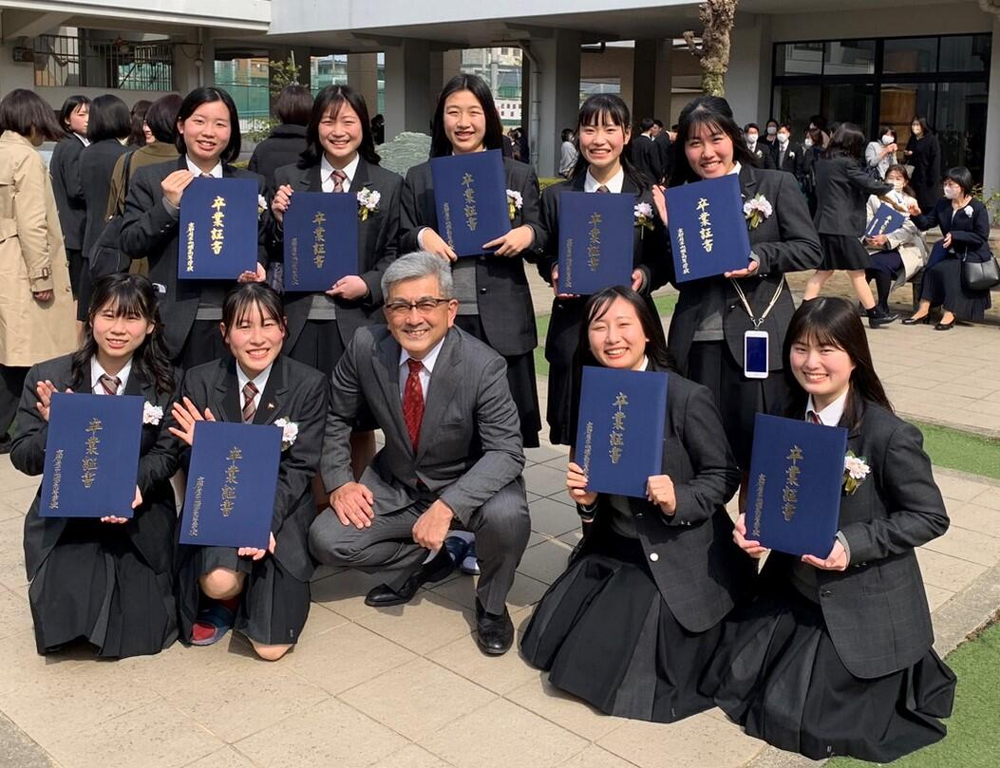

- ＨＯＭＥ
- >
- 部活動
- >
- 女子テニス
- >
- 女子テニス部ＴＯＰＩＣＳ
女子テニス部 新チーム発足しました
◎女子テニス部 令和５年度 新チームが発足しました。
３年生 ５名、
２年生 ９名に
１年生 ８名を新たに迎えて、
総勢２２名。
３年生の引退を受けて、
１・２年生１６名で
新たな戦いに向かいます。
◎３年生が引退しました。
５月１３日、
全国高校総体 団体の部 京都府予選 を終えて、
３年生が引退しました。
５名という少ない人数でしたが、
みんな熱心に活動を続け、
明るくて楽しく、
そして強いチームを作り上げてくれました。
引退式では、後輩達と別れを惜しんでいました。
○全国高校総体 団体の部 試合結果
２Ｒ 山城 ３０ 京都成章
３Ｒ 山城 ０２ 同志社 ...ベスト１６
○全国高校総体 個人の部 試合結果
・女子シングルス
藤本彩実叶(２年)...ベスト３２
夜久かのん(１年)...ベスト３２
大槻 芽衣(３年)...本戦出場
・女子ダブルス
大槻(３年)藤本(２年)ペア...ベスト１６
夜久(１年)内海(１年)ペア...ベスト１６
○その他の活動報告
・５月７日(日)
立命館宇治高校と練習試合
・４月２２日(土)
膳所高校と練習試合
・４月１６日(日)
明石城西高校と練習試合
女子テニス部 長岡京市Jrテニス大会 優勝
◎３月１８日、１９日に、
アクアパルコ洛西、他で開催された、
第25回長岡京市ジュニアテニス選手権大会、
18歳以下女子シングルスにおいて、
大槻芽衣(２年)が、優勝しました。
山城高校としては１２年ぶりの悲願達成です。
主な戦績は、以下の通りです。
シングルス 優 勝 大槻 芽衣(２年)
ベスト16 辻井 亜実(１年)
ダブルス ベスト８ 吉田(２年)宮田(２年)ペア
◎３月１日(水)山城高等学校・第75回卒業式が挙行され、
女子テニス部３年生、９名が卒業しました。
入学当初から、新型コロナウイルス感染症の影響を
受け続けてきた学年でしたが、
部活動と学習活動を両立させ、
みんな笑顔で卒業していきました。
前日の２月２８日(火)には、
思い出深いテニスコートで祝賀会を開き、
現役部員が先輩の卒業を祝い、別れを惜しみました。
３年生は自身の受験への取り組みを語り、
後輩たちを励ましてくれました。
こうして毎年、
質の高い文武両道を実現させる意識が受け継がれていきます。

◎その他の活動
○３月１１日(土)...大阪府、みどり清朋高校にて、
同校・桜宮高校と合同練習会を行いました。
○２月１８日(土)~２３日(祝)
長岡京市ジュニアテニス選手権大会予選リーグ
○２月４日(土)~１２日(日)
2023京都ウィンタージュニアテニス選手権大会
主な戦績...１８歳以下女子シングルス
川勝 茉央(２年) ベスト６４
宮田 陽菜(２年) ベスト６４
女子テニス部 近畿公立高校大会 出場
○2022年度近畿公立高校テニス大会(個人)出場
２月４日(土)、
大阪市・マリンテニスパーク北村で開催された、
第11回近畿公立高等学校テニス大会個人の部に、
大槻芽衣(２年生)と藤本彩実叶(１年生)が出場しました。
結果は思い通りにはいきませんでしたが、
２人とも早朝練習から熱心に準備して、
よく頑張りました。
前日練習の場所を提供してくださった桜宮高校をはじめ、
お世話になった皆様、ありがとうございました。
試合結果
１Ｒ 藤本彩実叶(１年生) ３６ 八尾高校(大阪･１年生)
２Ｒ 大槻芽衣(２年生) ５７ 国際情報高校(滋賀･２年生)
ｺﾝｿﾚ 藤本彩実叶(１年生) ６３ 膳所高校(滋賀･１年生)
ｺﾝｿﾚ 大槻芽衣(２年生) ６４ みどり清朋高校(大阪･２年生)

○1月29日、桜宮高校で開催された、
近畿公立高校大会個人戦出場者の練習試合に
大槻芽衣(２年生)と藤本彩実叶(１年生)が参加しました。
レベルの高い試合経験をさせていただき、
ありがとうございました。
○1月21日、28日、久御山高校で練習試合。
○1月24日、大雪の日、練習を早々に切り上げて、
雪遊びをしていました。
女子テニス部 活動報告
○近畿公立高等学校テニス大会団体の部 ベスト８
令和５年１月５日・６日に、大阪市・マリンテニスパーク北村にて開催された、
令和４年度第20回近畿公立高等学校テニス大会団体の部において、
ベスト８の成績を収めました。
決勝トーナメント１Ｒで、悔しい敗退となりましたが、この大会での活躍を目指して、
２年生はこの１年間、１年生は入部当初から、よく努力を重ねました。
応援とご協力をいただいた保護者の皆様、
練習試合をしてくださった各校テニス部の皆様、
また、大会を運営していただいた実行委員会の皆様、
ありがとうございました。
対戦結果
予選トーナメント １Ｒ 山城 ３２ 日高（和歌山）
２Ｒ 山城 ３２ 大阪ビジネスフロンティア（大阪）
決勝トーナメント １Ｒ 山城 ２３ みどり清朋（大阪）
団体メンバー（登録順）
大槻 芽衣(２年) 藤本彩実叶(１年) 吉田 果凜(２年)
川勝 茉央(２年) 辻井 亜実(１年) 宮田 陽菜(２年)
寺田 葵(２年) 桐林 真央(１年) 丸橋乃々佳(１年)
○京都招待テニス選手権大会 出場
令和４年12月17日・18日に、山城総合運動公園テニスコートで開催された、
令和４年度京都招待テニス選手権大会に京都府代表として出場しました。
対戦結果
団体の部 １Ｒ 山城 ２１ 帝塚山(奈良)
２Ｒ 山城 ０２(打切) 同志社(京都)
団体メンバー(登録順)
大槻 芽衣(２年) 藤本彩実叶(１年) 吉田 果凜(２年) 宮田 陽菜(２年)
個人の部 １Ｒ 大槻 芽衣(２年) ０６ 大阪女学院(１年)
○その他の活動報告
・令和５年１月４日 桜宮(大阪)・膳所(滋賀)・一条(奈良)と桜宮高校にて練習試合。
・令和５年１月３日 新年初練習
１年生は屋上から日の出を拝んでいました。
練習後、全員で、大将軍八神社に初詣に行きました。

・令和４年12月24日 明石城西(兵庫)・神戸野田(兵庫)・高槻北(大阪)と
明石城西高校にて練習試合。
・令和４年12月10日・11日 秋(冬)合宿
和歌山市・つつじヶ丘テニスコートにて秋(冬)合宿を行い、
10日は部内戦、11日は近大和歌山・海南・近大附属高校と練習試合をしました。
・令和４年11月20日 立命館宇治高校と練習試合

○京都府公立高等学校テニス選手権大会団体の部 優勝
１１月５日（土）に、向島テニスコートで開催された、
令和４年度第２３回京都府公立高等学校テニス選手権大会
団体の部２次予選において、優勝しました。
本大会での優勝は１２回目、１０年連続となります。
試合結果 準決勝 山城 ３０(打切) 南陽
決勝 山城 ３１(打切) 城南菱創
団体メンバー（登録順）
大槻 芽衣(２年) 藤本彩実叶(１年) 吉田 果凜(２年)
川勝 茉央(２年) 辻井 亜実(１年) 森田 侑芭(１年)
宮田 陽菜(２年) 寺田 葵(２年) 桐林 真央(１年)
この結果により、来年１月に大阪で開催される、
第２０回近畿公立高等学校テニス大会(団体の部)に、
京都府代表として出場が決まりました。
近畿大会への出場は１３年連続となります。
応援していただいた保護者の皆様、
練習試合をしていただいた各校テニス部の皆様、
練習相手を務めてくれた男子テニス部のみんな、
ありがとうございました。
悲願の近畿大会優勝を目指してさらに努力を続けます。
例年の通り、校内において
校長先生により、表彰式をしてもらいました。
○京都府公立高等学校テニス選手権大会個人の部 準優勝・第３位
１０月３０日（日）に、小畑川中央公園テニスコートで開催された、
令和４年度第７回京都府公立高等学校テニス選手権大会
個人の部２次予選において、
大槻 芽衣(２年)が準優勝、藤本彩実叶(２年)が第３位の
成績を収めました。
対戦結果 準決勝 大槻 芽衣(２年) ６４ 洛北(２年)
準決勝 藤本彩実叶(１年) ２６ 堀川(１年)
決勝 大槻 芽衣(２年) １６ 堀川(１年)
順位戦 藤本彩実叶(１年) ７５ 洛北(２年)
この結果により、大槻・藤本の２名が、
２月に大阪で開催される、
第１１回近畿公立高等学校テニス大会(個人の部)に、
京都府代表として出場が決まりました。
○京都府高等学校テニス選手権大会 結果
１０月９日（日）～１０月３０日（日）にかけて開催された、
令和４年度第４２回京都府高等学校テニス選手権大会において、
以下の選手が、本戦での成績を残しました。
女子シングルス 大槻 芽衣(２年) ベスト３２
藤本彩実叶(１年) 本戦出場
女子ダブルス 大槻(２年)藤本(１年) 本戦出場
川勝(２年)辻井(１年) 本戦出場
この結果により、大槻 芽衣(２年)が、
１２月に京都で開催される、
京都招待テニス選手権大会(個人の部)に、
京都府の代表として出場が決まりました。
また、先日の、
全国選抜高校テニス大会京都府大会第７位の成績により、
京都招待テニス選手権大会(団体の部)にも出場が決まりました。
○その他の活動報告
１１月１３日 滋賀県・光泉カトリック高校と練習試合
１１月３日 京都橘高校と練習試合
１１月２日 男子テニス部と練習試合
○全国選抜高等学校テニス大会京都府大会
９月18,23日、太陽が丘と丹波自然公園で行われた、
令和４年度全国選抜高等学校テニス大会
京都府大会において、ベスト８の成績を収めました。
順位戦は行われず、京都招待大会への出場は叶いませんが、
第７シードの面目は保ちました。
対戦結果 ２R 山城 ３２ 南陽
３R 山城 ５０ 東宇治
４R 山城 ０３ 同志社国際
○近畿高等学校テニス大会京都府予選
８月18日から25日にかけて行われた、
令和４年度近畿高等学校テニス大会
京都府予選において、以下の成績を収めました。
本大会への出場は叶いませんでしたが、
シード権獲得に向けて、
２年生も１年生もよく頑張りました。
女子シングルス 本戦出場者
大槻 芽衣(２年) 藤本彩実叶(１年)
川勝 茉央(２年) 吉田 果凜(２年)
...以上 ベスト64
女子ダブルス 本戦進出ペア
大槻 芽衣(２年)・藤本彩実叶(１年)ペア
...以上 ベスト８
宮田 陽菜(２年)・川勝 茉央(２年)ペア
吉田 果凜(２年)・森田 侑芭(１年)ペア
辻井 亜実(１年)・丸橋乃々佳(１年)ペア
...以上 ベスト32
○夏期合同合宿
８月10日から13日にかけて、
令和４年度女子テニス部夏期合同合宿を、
例年通り、福知山市の大江山グリーンロッジにて、
本校と桂高校、向陽高校、久御山高校と合同で、
総勢37名で実施しました。
山城高校の卒業生も応援に駆けつけてくれて、
賑やかで有意義な合宿となりました。

○京都府公立高等学校テニス選手権大会(団体の部)
８月１日、丹波自然公園において、
令和４年度京都府公立高等学校テニス選手権大会
団体の部１次予選が行われ、ベスト４に残り、
11月の２次予選に出場が決まりました。
対戦結果 ２R 山城 ４１ 莵道
３R 山城 ４１ 久御山
○京都府公立高等学校テニス選手権大会(個人の部)
８月３日、丹波自然公園において、
令和４年度京都府公立高等学校テニス選手権大会
個人の部１次予選が行われ、２名がベスト４に残り、
10月の２次予選に出場が決まりました。
出場者及び結果
大槻 芽衣(２年)...ベスト４
藤本彩実叶(１年)...ベスト４
宮田 陽菜(２年)...ベスト16
川勝 茉央(２年)...ベスト16
吉田 果凜(２年)...ベスト16
辻井 亜実(１年)...ベスト32
桐林 真央(１年)...初戦敗退
○2022京都サマージュニアテニス選手権大会結果
女子シングルス......大槻 芽衣(２年)...ベスト64
女子ダブルス
大槻 芽衣(２年)・藤本彩実叶(１年)...ベスト16
○2022年度 関西ジュニアテニス選手権大会(７月13日)
18歳以下女子シングルス 出場
藤本萌七未(３年)
○練習試合一覧
６月４日...明石城西高校(於:明石城西)
６月12日...立命館宇治高校(於:立命館宇治)
７月28,29日...大阪府高校合同合宿参加(丹波自然公園)
７月30日...東大津高校(希望ヶ丘公園)
８月６日...同志社女子高校(於:同志社女子)
８月７日...膳所･守山高校(於:膳所)
８月16日...洛西･洛北･城南菱創高校(於:太陽が丘)
９月10日...明石城西･池田高校(於:明石城西)
９月24日...膳所･守山･大津商業高校(於:膳所)


○５月２２日(日)、
全国高校総体団体の部京都府予選を終えて、
３年生９名が引退しました。
入部当初から、
新型コロナウイルス感染症に翻弄された学年でしたが、
高い目的意識と、
仲間への思いやりを持ち続けて、
明るく楽しく、そして時に厳しい、
山城高校女子テニス部を作り上げてくれました。
３年生の皆さん、ありがとうございました。
そして今までご支援とご協力をいただいた保護者の皆様、
練習試合をしていただいた各学校のテニス部の皆様、
練習相手を努めてくれた男子テニス部のみんな、
ありがとうございました。
○令和４年度全国高等学校総合体育大会団体の部京都府予選
(５月１４日(土)～２２日(日)、太陽が丘・丹波自然公園)
団体メンバー（登録番号順）
１ 藤本萌七未(３年)
２ 本間 涼帆(３年)
３ 安田 奈央(３年)
４ 大槻 芽衣(２年)
５ 永井 千優(３年)
...５ 藤本彩実叶(１年)...
対戦結果
２回戦 山城 ３０ 向陽
３回戦 山城 ２１ 南陽
４回戦 山城 ２０(打切) 洛北
５回戦 山城 ３０ 京都共栄学園
準決勝 山城 ０２(打切) 同志社国際
第３位に入賞し、第４シードの面目を保ちました。
山城高校がこの大会で第３位以上に入賞するのは、
２７年ぶりの快挙です。よく頑張りました。
また、団体メンバー以外の３年生も、
最後まで下級生の指導をしてくれました。
おかげで、一年生は順調に上達しています。
ありがとうございました。
○令和４年度全国高等学校総合体育大会個人の部京都府予選
(４月２４日(日)～５月５日(祝)、太陽が丘 等)
２次予選出場者 戦績
シングルス ベスト16 藤本萌七未(３年)
ベスト32 本間 涼帆(３年)
ベスト64 永井 千優(３年) 大槻 芽衣(２年)
藤本彩実叶(１年)
ダブルス ベスト16 藤本(３年)本間(３年)ペア
安田(３年)永井(３年)ペア
○４月２日(土)～３日(日) 宿泊遠征
インターハイ予選に向けて、兵庫県へ宿泊遠征に行きました。
２日は明石城西高校で、
同校、葺合高校、伊川谷北高校と終日練習試合。
同日夜に、青野運動公苑に移動して宿泊。
翌３日は、西日本の強豪校が集う大会に参加しました。
山城高校が対戦したのは、
相生学院Ｂチーム(兵庫県)、西京(山口県)、加古川北(兵庫県)でした。
張り詰めた雰囲気の中、レベルの高い試合を経験することができました。
○その他の練習試合
４月１日(金) 全員 VS 洛西高校(太陽が丘)
４月３日(日) Ｂﾁｰﾑ VS 久御山高校(同校)
４月１０日(日) 団体ﾒﾝﾊﾞｰ VS 桜宮高校(同校)
４月１７日(日) 全員 VS 京都橘高校(橘･山城)
４月２３日(土) 全員 VS 東大津高校(希望ヶ丘)
５月７日(土) 団体ﾒﾝﾊﾞｰ VS 同志社女子高校(同校)
５月８日(日) 団体ﾒﾝﾊﾞｰ VS 同志社高校(同校)
◎京都ジュニアテニス選手権大会が
３月25日より開催され、
予選から本戦へと
みんなしっかり戦いました。
主な結果は次の通りです。
○18歳以下女子シングルス
ベスト16(順位戦の結果14位) 藤本萌七未(２年)
ベスト32 本間 涼帆(２年) 安田 奈央(２年)
大槻 芽衣(１年)
ベスト64 永井 千優(２年)
○18歳以下女子ダブルス
ベスト８ 藤本萌七未(２年)･本間 涼帆(２年)ペア
ベスト32 安田 奈央(２年)･永井 千優(２年)ペア
大槻 芽衣(１年)･吉田 果凛(１年)ペア
新型コロナウイルス感染症拡大により、
京都ウィンタージュニアテニス選手権大会と
長岡京市ジュニアテニス選手権大会が中止となり、
久しぶりの本格的な大会への参加となりましたが、
皆、実力を発揮することができました。

○２月５日（土）、６日（日）に、
大阪市のマリンテニスパーク・北村で開催された、
第10回近畿公立高等学校テニス大会個人の部に、
２年生４名が京都府の代表として参加し、
藤本萌七未が、ベスト４に入り、表彰されました。
新型コロナウイルス感染症拡大の影響で、
十分な練習ができない中、
みんな全力を尽くして戦いました。
詳細は以下の通りです。
・予選Bリーグ 五十川夏琉 16 伊川谷北高２年(兵庫)
五十川夏琉 26 桜宮高２年(大阪)
・予選Cリーグ 藤本萌七未 62 栗東高２年(滋賀)
藤本萌七未 62 枚方高１年(大阪)
・予選Gリーグ 安田 奈央 06 栗東高１年(滋賀)
安田 奈央 16 加古川北高１年(兵庫)
・予選Kリーグ 本間 涼帆 61 みどり清朋高１年(大阪)
本間 涼帆 60 奈良高２年(奈良)
・決勝1.2位トーナメント
１R 藤本萌七未 60 一条高２年(奈良)
本間 涼帆 62 神戸高２年(兵庫)
２R 藤本萌七未 76(2) 宝塚西高２年(兵庫)
本間 涼帆 57 栗東高２年(滋賀)
３R 藤本萌七未 60 狭山高２年(大阪)
準決勝 藤本萌七未 46 伊川谷北高２年(兵庫)
・決勝３位トーナメント
１R 五十川夏琉 06 枚方高１年(大阪)
２R 安田 奈央 61 和歌山商業高２年(和歌山)
３R 安田 奈央 62 北稜高２年(京都)
決勝 安田 奈央 57 須磨翔風高１年(兵庫)
・コンソレーションマッチ
五十川夏琉 45(4) 奈良高２年(奈良)


カテゴリ一覧
主要リンク